WebTop 5¶
WebTop è un groupware completo che implementa il protocollo ActiveSync.
L’indirizzo per accedere all’interfaccia web è: https://<nome_server>/webtop.
Nota
Se NethServer è attestato ad un account provider remoto Active Directory, un account utente AD aggiuntivo e dedicato è necessario al modulo per essere pienamente operativo! Fare riferimento alla sezione Join ad un dominio Active Directory esistente.
Autenticazione¶
Usa sempre il nome utente completo in formato <user>@<domain> per accedere all’applicazione web e via Active Sync.
Esempio
Nome server: mymail.mightydomain.com
Dominio di posta alternativo: baddomain.net
Utente: goofy
Login: goofy@mightydomain.com
Nota
Il protocollo Active Sync è supportato solo su Android e IOS. Outlook non è supportato.
Utente admin¶
Dopo l’installazione, WebTop sarà accessibile utilizzando il suo utente amministrativo. L’utente amministrativo può cambiare le impostazioni globali ed effettuare login come un altro utente, ma non è un utente di sistema e non può accedere agli altri servizi come Mail, Calendario, ecc.
Le credenziali di default sono:
Utente: admin
Password: admin
La password del’utente admin deve essere cambiata dall’interfaccia di WebTop.
Avvertimento
E” fondamentale cambiare la password dell’amministratore subito dopo l’installazione!
E’ possibile controllare la posta dell’utente admin di sistema usando questo login: admin@<dominio> dove <dominio> è il dominio del server che fa parte del FQDN.
Esempio
Nome server: mymail.mightydomain.com
Utente: admin
Login: admin@mightydomain.com
Cambio della password di admin¶
Accedere a WebTop usando l’utente admin, quindi aprire le impostazioni utente facendo clic dal menu nell’angolo in alto a destra.
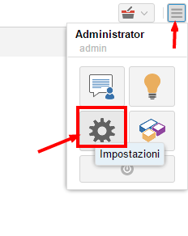
Selezionare Impostazioni quindi cliccare sul tasto guilabel:Cambia password.
Se si desidera reimpostare la password dell’amministratore da riga di comando, utilizzare i seguenti comandi:
curl -sL https://git.io/fjhn8 -o webtop-set-admin-password
bash webtop-set-admin-password <newpassword>
Ricordarsi di sostituire <newpassword> con la nuova password che si vuole impostare, esempio:
bash webtop-set-admin-password VeryInsecurePass
Modifica del logo¶
Per modificare e personalizzare il logo iniziale visualizzato nella pagina di accesso di WebTop, è necessario caricare il file immagine personalizzato sulle immagini pubbliche dell’utente amministratore e rinominarlo con «login.png».
Procedere come segue:
accedere con l’utente admin di WebTop
selezionare il servizio cloud e le immagini pubbliche:
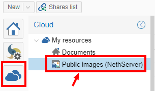
caricare l’immagine (tramite il pulsante Upload in basso a sinistra o semplicemente trascinando con un drag & drop)
rinominare l’immagine caricata in modo che il suo nome sia «login.png» (usare il tasto destro del mouse -> Rinomina):

il prossimo login mostrerà il nuovo logo sulla pagina di login
Nota
Il logo personalizzato verrà mostrato solo quando si accede a Webtop utilizzando il suo URL pubblico. L’URL pubblico predefinito è l’FQDN del server, ma potrebbe essere modificato come descritto nella sezione seguente.
Modifica dell’URL pubblico¶
Per impostazione predefinita, l’URL pubblico di WebTop è configurato con il nome FQDN impostato nel server-manager.
Per cambiare URL da: http://server.domain.local/webtop a: http://mail.publicdomain.com/webtop
eseguire i seguenti comandi
config setprop webtop PublicUrl http://mail.publicdomain.com/webtop
signal-event nethserver-webtop5-update
Nota
Quando si utilizza un certificato SSL valido, ad esempio Let’s Encrypt, si consiglia di configurare l’URL pubblico utilizzando https
Gestione impostazioni utente¶
La maggior parte delle impostazioni utente può essere gestita direttamente dall’utente stesso tramite il menu delle impostazioni. Le impostazioni bloccate richiedono privilegi di amministrazione.
L’amministratore può impersonare altri utenti, per controllare gli account esistenti utilizzando speciali credenziali di accesso:
User name:
admin!<username>Password:
<WebTop admin password>
Durante l”impersonate l’admin assume i privilegi dell’utente, potendo così di controllare esattamente ciò che l’utente può vedere. L’amministrazione completa delle impostazioni utente è disponibile direttamente nell’interfaccia di amministrazione, facendo clic con il pulsante destro del mouse su un utente: il menu delle impostazioni aprirà il pannello delle impostazioni utente completo, con tutte le opzioni sbloccate.
È anche possibile effettuare una modifica massiva del dominio di posta elettronica degli utenti selezionati: selezionare gli utenti (Clic + CTRL per selezione multipla) a cui si desidera applicare questa modifica, quindi fare clic con il pulsante destro del mouse su Bulk update email domain.
Autenticazione a due fattori (2FA)¶
WebTop supporta l’autenticazione a due fattori. L’utente può scegliere tra:
Google Authenticator: il codice verrà generato utilizzando l’app Google Authenticator (https://support.google.com/accounts/answer/1066447?co=GENIE.Platform%3DAndroid)
Mail secondaria: il codice di accesso verrà inviato all’indirizzo di posta selezionato
Per abilitare 2FA:
Fare clic sul pulsante del menu nell’angolo in alto a destra e selezionare Impostazioni
Quini selezionare Sicurezza (OTP) e cliccare sul pulsante Attiva.

Sincronizzazione con ActiveSync (EAS)¶
I dispositivi mobili possono essere sincronizzati utilizzando ActiveSync. ActiveSync può essere utilizzato solo per contatti e calendari.
Apple iOS¶
Accedere al iOS device, poi su Impostazioni e aggiungere un account Exchange seguendo la guida ufficiale: https://support.apple.com/en-us/HT201729
Compilare i campi richiesti con:
E-mail: aggiungere indirizzo e-mail, es: pippo@nethserver.org
Server: aggiungere il nome pubblico del server, es: mail.nethserver.org
Dominio: lasciare vuoto
User name: Inserire il nome utente completo, es: pippo@nethserver.org
Password: inserire la password
Nota
I device iOS richiedono un certificato SSL valido sul server. Vedi Certificati
Google Android¶
Accedere al device Android, navigare su Impostazioni, quindi selezionare Aggiungi account -> Exchange (o «Aziendale» per vecchie versioni).
Compilare i campi richiesti con:
User name: Inserire il nome utente completo, es: pippo@nethserver.org
Password: inserire la password
Selezionare Configurazione manuale e cambiare il nome del Server impostando il nome pubblico corretto. In fine, se si utilizza un certificato auto-firmato sul server, selezionare l’opzione SSL/TLS (accetta ogni certificato).
Nota
Su alcune versioni Android (es. Samsung), il nome utente e il dominio devono essere inseriti sulla stessa riga. In questo caso, lasciare vuoto il campo prima del carattere backslash () ed inserire il nome utente nel seguente formato: `` pippo@nethserver.org``
Calendari e Rubriche multiple¶
Calendari e rubriche condivise con l’utente possono essere sincronizzati utilizzando il protocollo ActiveSync.
Le risorse condivise sono visualizzate con il nome e la categoria del proprietario (il numero tra parentesi quadre è l’ID interno). Gli eventi privati non vengono sincronizzati.
I device mobili basati su Apple iOS supportano integralmente le cartelle/categorie per calendario, contatti e attività (chiamati promemoria), inclusi i colori originali.
I dispositivi mobili basati su Android supportano solo calendari e contatti (le attività non sono supportate), ma utilizzando l’applicazione Google Calendar tutti gli elementi avranno lo stesso colore.
Installando e utilizzando l’applicazione CloudCal è possibile modificare i colori associati ad ogni calendario, inclusi quelli condivisi.
Sui dispositivi Android, i contatti delle rubriche condivise vengono uniti a quelli della rubrica personale e visualizzati in un’unica vista. I contatti possono essere modificati e le modifiche verranno recepite dalla sorgente originale.
Nota
Per ricevere i dati tramite EAS sui dispositivi mobili, è necessario verificare che le risorse condivise (Calendari e Contatti) abbiano la sincronizzazione abilitata (completa o di sola lettura):
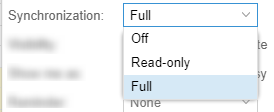
È possibile abilitare o disabilitare la sincronizzazione per ogni risorsa condivisa (calendari e contatti). L’utente può personalizzare ogni risorsa condividendo con lui decidendo il tipo di sincronizzazione.
Per farlo, basta fare clic con il pulsante destro del mouse sulla risorsa condivisa → Personalizza → Sincronizza dispositivi:

L’impostazione predefinita è «Disattiva».
Sincronizzazione con CalDAV e CardDAV¶
Calendari e rubriche possono essere sincronizzati anche attraverso i protocolli CalDAV e CardDAV.
Per sincronizzare un calendario, copiare il suo link URL cliccando con il tasto destro sul calendario e selezionando Link a questo calendario, quindi usarlo per configurare il client di terze parti.
Per sincronizzare una rubrica, copiare il suo link URL cliccando con il tasto destro sulla rubrica e selezionando Link a questa rubrica, quindi usarlo per configurare il client di terze parti.
Per l’autenticazione, fornire le credenziali nel seguente formato:
Nome utente: inserire il nome utente completo (es. pippo@nethserver.org)
Password: inserire la password
Alcuni client di terze parti consentono di semplificare la configurazione tramite la funzione di autodiscovery che rileva automaticamente le risorse sincronizzabili, come nel caso dei client di dispositivi mobili (ad esempio dispositivi Android o iOS).
Nota
Se si utilizzano client che non supportano l’autodiscovery, è necessario utilizzare l’URL completo: https://<server_name>/webtop-dav/server.php
Se si utilizzano client che supportano l’autodiscovery, utilizzare l’URL: https://<server_name>
Google Android¶
Un buon client di terze parti Android gratuito è Opensync.
installare dal market l’app suggerita;
aggiungere un nuovo account cliccando sul tasto + e selezionare Login with URL and username;
inserire l”
URL(https://<server_name>), il nome utente completo (es. pippo@nethserver.org) e la password;cliccare sul nuovo profilo e selezionare le risorse che si vogliono sincronizzare.
Apple iOS¶
Il supporto CalDAV/CardDAV è integrato su iOS, quindi per configurarlo:
spostarsi su Impostazioni -> Account e password -> Aggiungi account;
selezionare Altro -> Aggiungere un account CalDAV o :guilabel: CardDAV;
inserire il nome del server (ad esempio server.nethserver.org), nome utente completo (ad esempio pippo@nethserver.org) e password.
Per impostazione predefinita, l”URL di sincronizzazione utilizza il nome principale del server (FQDN), se fosse necessario modificarlo:
config setprop webtop DavServerUrl https://<new_name_server>/webtop-dav/server.php
signal-event nethserver-webtop5-update
Client per desktop¶
Thunderbird
Per utilizzare CalDAV e CardDAV su Thunderbird sono necessari degli add-on di terze parti come Cardbook (per i contatti) e Lightning (per i calendari).
L’add-on Cardbook funziona bene, il setup è semplice e supporta l’autodiscovery.
Il componente aggiuntivo Lightning non supporta l’autodiscovery: qualsiasi calendario deve essere aggiunto manualmente.
Outlook
Il client open source Outlook CalDav Synchronizer funziona bene, e supporta sia CardDAV che CalDAV.
Avvertimento
Webtop è concepito come groupware clientless: tutte le sue funzionalità sono unicamente disponibili tramite l’interfaccia web!
L’utilizzo di CalDAV/CardDAV tramite client di terze parti non può essere considerato un’alternativa di interfaccia Web.
Condivisione di calendari e rubriche¶
Condivisione Calendario¶
E” possibile condividere ogni calendario personale individualmente. Selezionare il calendario da condividere -> tasto destro -> Condivisione e permessi:
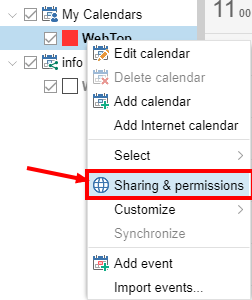
Selezionare l’utente destinatario della condivisione (o gruppo) e attivare le autorizzazioni sia per la cartella che per i singoli elementi:

Calendari di risorse¶
Con i calendari di risorse è possibile prenotare in maniera esclusiva auto aziendali, sale riunioni e altre attrezzature condivise. Per prenotare una risorsa, devi creare un evento e aggiungere la risorsa tra gli invitati, verificando che la risorsa sia disponibile per l’intervallo di tempo richiesto.
Creazione di una nuova risorsa¶
È necessario creare un account dedicato per ogni risorsa nell’account provider di NethServer.
Nota
Se l’utente appena creato non viene utilizzato per altri scopi, è consigliabile bloccarlo e rendere l’indirizzo email built-in disponibile solo per uso interno
Una volta creato l’account, puoi accedere al pannello di amministrazione di WebTop per creare la nuova risorsa e compilare i campi richiesti:
Nome: nome della risorsa che deve coincidere con l’utente creato sull’account provider
Nome visualizzato: descrizione della risorsa che verrà visualizzata come calendario
Tipo: scegli il tipo di risorsa tra Stanza e Attrezzatura
Risorsa disponibile: selezionare per rendere disponibile la risorsa
Email: lasciare come suggerito (resource@domain.ext)
Permessi: aggiungere gli utenti o i gruppi che potranno prenotare la risorsa (ad esempio, per consentire a tutti gli utenti di utilizzare la risorsa, aggiungere il gruppo «users»)
Manager: indicare se assegnare un utente (o gruppo) «manager» che potrà cancellare o spostare le prenotazioni effettuate da altri utenti su questa risorsa
Cliccando il tasto Salva & Chiudi la risorsa verrà creata e aggiunta automaticamente ai calendari condivisi degli utenti specificati nei permessi.
Prenotazione di una risorsa¶
Gli utenti che avranno il permesso di prenotare una risorsa potranno farlo creando un evento del calendario e aggiungendo la risorsa tra gli invitati utilizzando il tasto Aggiungi risorsa.
Tramite il tasto Mostra disponibilità viene mostrata una tabella con gli intervalli di tempo occupati e liberi delle risorse aggiunte.
E” possibile modificare la risoluzione dell’intervallo di tempo mostrata nella tabella utilizzando questo tasto:

Modificare la prenotazione di una risorsa¶
Solo il proprietario dell’evento può modificare la prenotazione della risorsa. L’utente definito come Manager della risorsa ha il permesso di modificare (cancellare o spostare) le prenotazioni effettuate anche da altri utenti.
Etichette personalizzate¶
È possibile aggiungere una o più etichette a un’e-mail, un evento del calendario o un’attività.
Esistono due tipi di etichette:
Privata: non utilizzabile per campi personalizzati e non visibile ad altri utenti
Condivisa: utilizzabile per pannelli di campi personalizzati e visibile ad altri utenti
L’utente può normalmente gestire solo etichette private. Per poter gestire le etichette condivise è necessario attivare una specifica autorizzazione tramite il pannello di amministrazione:
accedere al menu Amministrazione e selezionare Domini -> NethServer -> Gruppi -> Utenti -> Autorizzazioni
Aggiungi (+) -> Servizio -> com.sonicle.webtop.core (WebTop) -> Contesto -> TAGS -> Azione -> MANAGE
cliccare OK poi Salva & Chiudi
La gestione delle etichette è raggiungibile da questo pulsante in alto a destra:
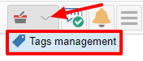
La stessa funzionalità è raggiungibile anche dai singoli moduli (Posta, Contatti, Calendario e Attività) facendo clic con il tasto destro -> Etichette -> Gestisci etichette.
La visibilità può essere impostata solo durante la creazione dell’etichetta. Per modificare la visibilità dell’etichetta è necessario eliminare l’etichetta e ricrearla di nuovo.
Le etichette create (sia private che condivise) possono essere utilizzate su qualsiasi altro modulo (Posta, Contatti, Calendario e Attività).
Campi personalizzati¶
Con i campi personalizzati è possibile fornire informazioni e dati aggiuntivi per ogni contatto, evento o attività.
I campi personalizzati sono disponibili solo per i moduli Contatti, Calendario e Attività e sono specifici di ciascun modulo.
Per poter gestire i campi personalizzati e i relativi pannelli, l’utente deve disporre di una specifica autorizzazione, ottenuta tramite il pannello di amministrazione:
accedere al menu Amministrazione e selezionare Domini -> NethServer -> Gruppi -> Utenti -> Autorizzazioni
Aggiungi (+) -> Servizio -> com.sonicle.webtop.core (WebTop) -> Contesto -> CUSTOM_FIELDS -> Azione -> MANAGE
cliccare OK poi Salva & Chiudi
Gli utenti con questa autorizzazione troveranno disponibile in alto a destra l’apposito pulsante:

Per creare un nuovo campo personalizzato è necessario compilare almeno il campo Nome e selezionare il Tipo:

Per il campo Nome sono ammessi solo caratteri alfanumerici (incluso - e _). Gli spazi non sono ammessi. Il campo Descrizione viene utilizzato per aggiungere dettagli e il campo Etichetta verrà mostrato in corrispondenza del campo all’interno del pannello in cui verrà utilizzata.
Per ogni campo è possibile abilitare queste due opzioni:

Mostra nella barra di ricerca: ll campo viene aggiunto nella finestra di ricerca multipla (sarà necessario un nuovo accesso)
Mostra in anteprima: il campo viene mostrato nella finestra di anteprima di un contatto
Per ogni tipologia sono disponibili ulteriori proprietà specifiche, anch’esse personalizzabili.
Per il tipo Elenco a discesa è necessario inserire i valori da selezionare:
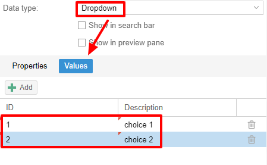
Usando il tasto Clona è possibile copiare il campo personalizzato per crearne uno simile:

Nota
Con la versione FREE, installata per default, è possibile creare fino al massimo of 3 campi personalizzati per ogni diverso modulo (3 in Contatti + 3 in Calendario + 3 in Attività). Per rimuovere questo limite è necessario effettuare l’upgrade alla versione PREMIUM acquistando una licenza dedicata su Nethesis shop
Ricerche su campi personalizzati¶
Una delle migliori funzionalità dei campi personalizzati è la possibilità di eseguire ricerche multiple su tutti i moduli e campi per i quali l’opzione Mostra nella barra di ricerca è stata attivata.
Pannelli personalizzati¶
Con i pannelli personalizzati è possibile utilizzare i campi personalizzati già creati e associarli alle risorse presenti in ogni modulo (contatti, eventi e attività).
Gli utenti con autorizzazione alla gestione dei campi personalizzati possono accedere al pannello di configurazione tramite il pulsante in alto a destra:
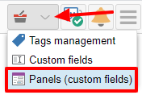
Quando si crea un nuovo pannello è obbligatorio indicare il Nome che apparirà nella risorsa. E” possibile inserire anche una Descrizione e un Titolo.
Utilizzando le etichette condivise, si può facilmente assegnare i pannelli a specifiche categorie di risorse. Ad ogni risorsa disponibile (tutti i contatti, tutti gli eventi o tutte le attività) verrà assegnato un pannello senza alcuna etichetta associata.
Tramite il tasto Aggiungi è possibile selezionare quali campi personalizzati utilizzare tra quelli già creati nel pannello..
Gestisci identità¶
In cliccare su Aggiungi quindi compilare i campi

È possibile associare la nuova identità a una cartella del proprio account o di un account condiviso
Account Locale
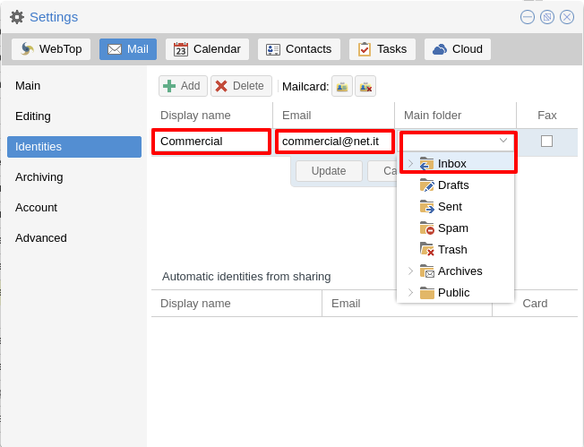
Account condiviso

In alternativa le mail inviate finiranno sempre nella cartella «Posta inviata» dell’account personale.
Gestione firme utenti e di dominio¶
Una delle caratteristiche principali della gestione delle firme su WebTop, è l’opportunità di integrare immagini o campi personalizzati profilati per utente.
Per utilizzare le immagini è necessario caricarle sul cloud pubblico attraverso l’utente admin di WebTop in questo modo:
Per caricare una immagine è possibile usare il tasto Carica che si trova in basso oppure semplicemente tramite un drag & drop.
Nota
si ricorda che le immagini pubbliche inserite nella firma vengono in realtà collegate con un link pubblico. Per risultare visibili ai destinatari delle mail è necessario che il server sia raggiungibile da remoto sulla porta 80 (http) e che il suo nome FQDN sia risolvibile pubblicamente.
In alternativa, è possibile configurare un’impostazione globale per trasformare automaticamente le immagini in allegati inline anziché in collegamenti Internet pubblici
È possibile farlo dall’interfaccia web accedendo al pannello di amministrazione -> Proprietà (sistema) -> Aggiungi -> selezionando com.sonicle.webtop.mail (Mail) ed inserendo i dati nei campi Chiave e Valore in base alla chiave da configurare:
public.resource.links.as.inline.attachments = true (default = false)
Per cambiare la propria firma, ogni utente può accedere a :

È possibile utilizzare l’immagine caricata all’interno della firma con questo pulsante:

Nota
La firma personale può essere associata all’utente o all’indirizzo di posta. Gli utenti con accesso all’indirizzo di posta, potranno utilizzare anche la firma.
Accedendo le impostazioni dell’utente dalla pagina di amministrazione di WebTop ( ) è inoltre possibile impostare una mailcard generale per il dominio che verrà impostata automaticamente per tutti gli utenti che non hanno configurato la propria mailcard personale:
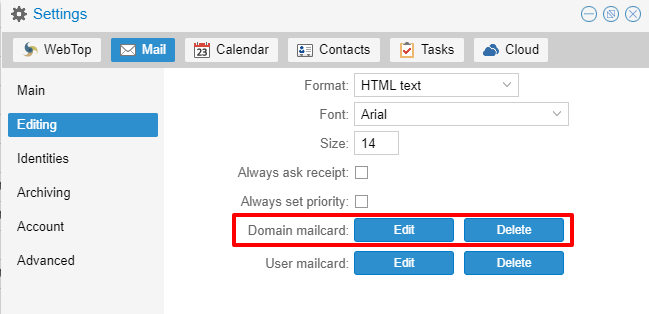
Inoltre, sarà anche possibile modificare le informazioni personali:

che potranno essere utilizzate all’interno dei campi parametrizzati all’interno dell’editor della firma di dominio:
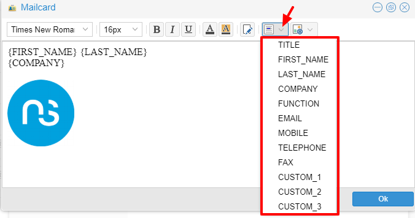
In questo modo è possibile creare un’unica firma che verrà automaticamente personalizzata per ogni utente che non utilizzi la propria firma.
Configurare più firme per un singolo utente¶
È possibile configurare più firme HTML per ogni singolo utente.
Accedere a e creare identità multiple:
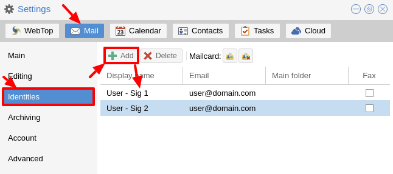
Per modificare ogni singola firma selezionare , quindi selezionare ogni singola firma e cliccare sul pulsante modifica firma
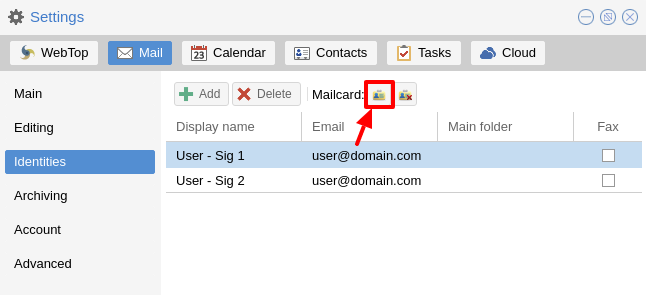

Al termine, chiudere la finestra e fai clic su SÌ:

per utilizzare più firme, creare una nuova e-mail e scegliere la firma:

Anteprima mail sulla riga del messaggio¶
Per impostazione predefinita, nella pagina della posta elettronica verrà visualizzata un’anteprima del contenuto degli ultimi messaggi ricevuti.
Questa funzione può essere abilitata o disabilitata dal menù Impostazioni -> Posta Elettronica, la casella di controllo è denominata Mostra anteprima sulla riga del messaggio.
Archiviazione mail¶
L’archiviazione è utile per mantenere organizzata la cartella della posta in arrivo spostando manualmente i messaggi.
Nota
Archivio mail non è un backup
Il sistema crea automaticamente una nuova cartella speciale di archivi

Se la cartella Archivi non viene visualizzata immediatamente al momento dell’accesso, verrà visualizzata alla prima archiviazione.
Esistono tre criteri di archiviazione in
Cartella singola una cartella principale per tutte l’email archiviate
Per anno un alberatura per ogni anno
Per anno/mese un alberatura per ogni anno e mese

Per mantenere la struttura originale delle cartelle è possibile attivare Mantieni struttura cartelle

L’operazione di archiviazione è accessibile dal menu contestuale (tasto destro). Clicca su :guilabel: Archivia
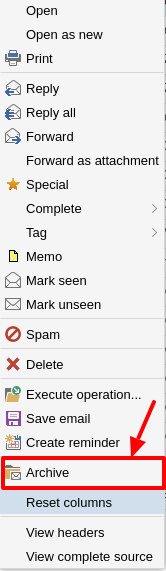
Il sistema elaborerà l’archiviazione in base alle ultime impostazioni scelte.
Sottoscrizione di cartelle IMAP¶
Su WebTop, per impostazione predefinita, tutte le cartelle IMAP sul server vengono automaticamente sottoscritte e sono quindi visibili dal primo accesso.
Se si vuole nascondere dalla vista alcune cartelle, che equivale a rimuovere la sottoscrizione, è possibile farlo semplicemente cliccando con il tasto destro del mouse sulla cartella per nasconderla e selezionare dal menu interattivo la voce «Nascondi dall’elenco».
Ad esempio, se si desidera nascondere la sottocartella «cartella1» da questo elenco, è sufficiente fare clic con il pulsante destro del mouse su di essa e selezionare «Nascondi dall’elenco»:
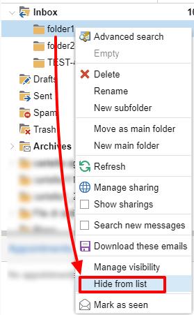
È possibile gestire la visibilità delle cartelle nascoste attraverso la funzionalità Gestisci visibilità:
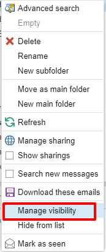
Ad esempio, se si desidera ripristinare la sottoscrizione della folder1 appena nascosta, basta selezionarla dall’elenco delle cartelle nascoste e fare clic sull’icona a sinistra:
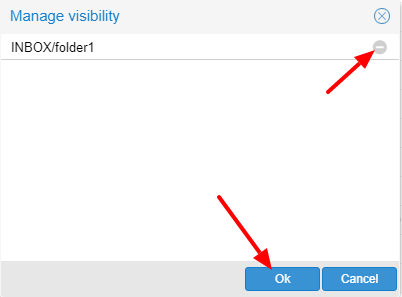
Personalizzare la sicurezza proattiva sulle e-mail¶
La funzione di sicurezza proattiva sui messaggi di posta elettronica consente alcune personalizzazioni sia per l”utente finale che per l”amministratore di WebTop.
Per l”utente finale è possibile contrassegnare un mittente come attendibile quando viene riconosciuto come tale dallo scudo giallo. Per farlo, è sufficiente cliccare direttamente sullo scudo o cliccare con il tasto destro sul mittente e selezionare la voce Marca come affidabile.
Nota
Questo tipo di personalizzazione è valido solo per l’utente che ha eseguito l’azione. È possibile contrassegnare un mittente come attendibile solo se lo scudo è giallo.
L”utente admin può disabilitare tutte o solo alcune delle regole che fanno parte della PAS (ProActive Security), sia per singoli utenti che per gruppi. Per fare ciò è necessario aggiungere una specifica autorizzazione (al singolo utente o al gruppo di utenti) per il Servizio com.sonicle.webtop.mail (Mail) e per la risorsa PRO_ACTIVE_SECURITY:
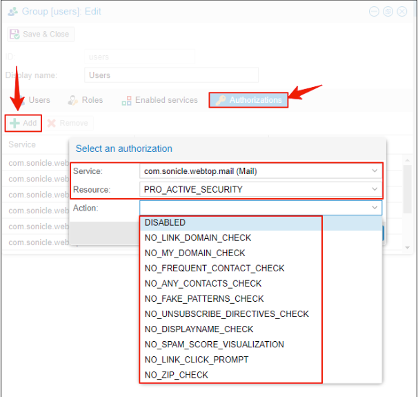
Di seguito è riportata una spiegazione di ogni singola voce disponibile come Azione :
DISABLED: disabilita completamente il PASNO_LINK_DOMAIN_CHECK: non controllare domini diversi dal dominio del mittenteNO_MY_DOMAIN_CHECK: non verificare se il dominio del mittente è nel mio dominioNO_FREQUENT_CONTACT_CHECK: non controllare se il mittente è nei miei contatti che vengono salvati automaticamenteNO_ANY_CONTACTS_CHECK: non controllare se il mittente è tra i miei contattiNO_FAKE_PATTERNS_CHECK: non verificare la presenza di pattern falsi nel mittente (es. indirizzo email del nome riportato è diverso dall’indirizzo email del mittente)NO_UNSUBSCRIBE_DIRECTIVES_CHECK: non spuntare la voce per le direttive di disiscrizione alla mailing list (solo se lo stato spam è verde)NO_DISPLAYNAME_CHECK: non confrontare il nome visualizzato del contatto con il contatto nella mia rubrica con la stessa emailNO_SPAM_SCORE_VISUALIZATION: non mostrare/controllare il punteggio di spam visualizzato nell’intestazione del messaggioNO_LINK_CLICK_PROMPT: non controllare l’azione di clic sui collegamentiNO_ZIP_CHECK: non dare avvisi sugli allegati zip
In questo modo è possibile personalizzare e creare profili speciali per alcuni utenti che potrebbero non volere che tutte le azioni siano attive.
L’amministratore può anche scegliere l’elenco delle estensioni di file per gli allegati considerate una minaccia. Per impostazione predefinita, queste sono le estensioni considerate pericolose: exe,bat,dll,com,cmd,bin,cab,js,jar
Per modificare questo elenco è necessario aggiungere questa impostazione globale:
Servizio =
com.sonicle.webtop.mailChiave =
pas.dangerous.extensions
Ad esempio, se si volesse aggiungere l’estensione HTML tra quelle considerate pericolose, il campo valore dovrà contenere quanto segue:
Valore =
exe,bat,dll,com,cmd,bin,cab,js,jar,html(I valori devono sempre essere separati da una virgola)
Esportazione eventi (CSV)¶
Per esportare gli eventi dei calendari nel formato CSV (Comma Separated Value), fare clic sull’icona nell’angolo in alto a destra.
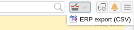
Infine, seleziona un intervallo di tempo e clicca su: guilabel: Avanti per esportare in un file CSV.
Attività¶
Filtri di visualizzazione rapida¶
Nella barra degli strumenti sopra la griglia sono presenti 7 pulsanti che permettono di selezionare la visualizzazione rapida più adatta. I primi due pulsanti si riferiscono alle attività di oggi o a quelle pianificate nei prossimi 7 giorni:

Oggi: mostra le attività non completate senza una data di inizio o con una data di inizio fino a oggi (inclusa) e quelle completate con una data di fine fino a oggi (inclusa)
Prossimi 7 giorni: mostra le attività non completate senza data di inizio o che iniziano fino a 7 giorni da oggi e le attività completate con data di completamento fino ad ora (incluso)
I restanti 5 pulsanti permettono di ottenere questi altri tipi di visualizzazioni rapide:
Non iniziate: mostra solo le attività con stato «Da iniziare» e che iniziano oggi (incluso)
In ritardo: mostra solo le attività non completate con data di inizio fino a oggi (incluso) e data di completamento precedente a quella corrente
Completate: mostra tutte le attività con stato completato e con qualsiasi intervallo di date
Non completate: mostra tutte le attività con stato diverso da completato e data di inizio entro 1 anno (per le attività ricorrenti, viene mostrata solo la prima istanza della serie ancora da completare)
Tutte: mostra tutte le attività in qualsiasi stato (per le attività ricorrenti viene mostrata l’icona principale della serie)
Attività ricorrenti¶
È possibile configurare qualsiasi tipo di ricorrenza:
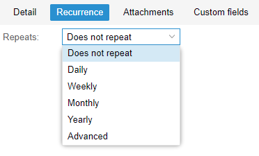
La modifica di un’attività ricorrente può essere eseguita in due modi diversi:
sulla singola attività aprendola con un doppio clic da una vista diversa da Tutte In questo caso l’attività verrà rimossa dalla ricorrenza e la sua icona diventerà questa:
sull’intera serie con un doppio clic dalla vista Tutte o utilizzando il seguente pulsante sulla singola attività già aperta:
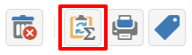
Attività secondarie (sotto-attività)¶
Su qualsiasi attività è sempre possibile aggiungere sotto-attività correlate (un solo livello Master/Slave) semplicemente usando il tasto destro e selezionando Aggiungi sotto-attività All’interno delle attività collegate, sia nella master che nella slave, è disponibile un link in basso a destra per aprire le relative attività:

È possibile Spostare o Copiare questo tipo di attività (tasto destro -> Sposta/Copia) scegliendo di copiare o spostare le sotto-attività tramite un’opzione attiva di default.
Ricerche multiple¶
Nella barra in alto è presente una ricerca rapida che viene eseguita su tutti i campi. Puoi anche restringere la ricerca riempiendo più campi di ricerca.
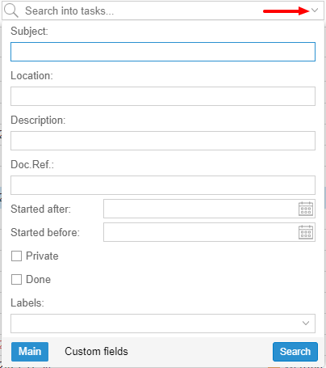
Integrazione con Nextcloud¶
Nota
Prima di procedere, verificare che il modulo Nextcloud sia stato installato da Software Center
Per impostazione predefinita, l’integrazione con Nextcloud è disabilitata per tutti gli utenti. Per abilitarla, utilizzare il pannello di amministrazione a cui è possibile accedere utilizzando la password dell’amministratore di Webtop
Ad esempio, se si desidera attivare il servizio per tutti gli utenti di WebTop, procedere come segue:
accedere al pannello amministrativo e selezionare Gruppi:
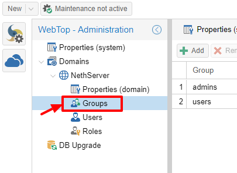
modificare le proprietà del gruppo «utenti» facendo doppio clic e selezionare il pulsante relativo alle autorizzazioni:
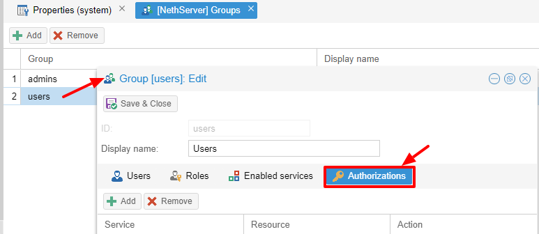
aggiungere alle autorizzazioni già presenti quelle relative sia alla risorsa
STORE_CLOUDche aSTORE_OTHERselezionando le voci come illustrate qui sotto:
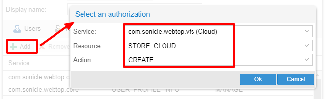

in modo da ottenere questo:
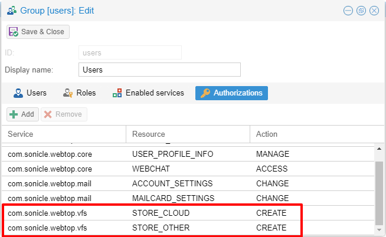
salvare e chiudere.
A questo punto da qualsiasi utente sarà possibile inserire la risorsa Nextcloud (locale o remota) nel proprio Cloud personale.
Per farlo basterà selezionare il pulsante relativo al Cloud e aggiungere una nuova risorsa «Nextcloud» cliccando con il tasto destro su «My resources» e successivamente «Add resource» in questo modo:
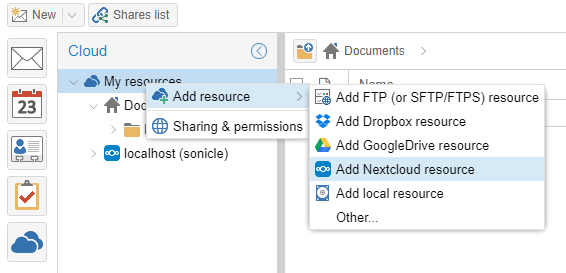
Si aprirà una procedura guidata precompilata:

Nota
Ricordarsi di compilare i campi Nome utente e Password relativi all’accesso alla risorsa Nextcloud, altrimenti non sarà possibile utilizzare il link pubblico ai file condivisi
Nota
Se Nextcloud è stato configurato con un virtual host personalizzato (es. nextcloud.mydomain.com) il Path deve essere cambiato da /nextcloud/remote.php/webdav a /remote.php/webdav (il prefisso /nextcloud va rimosso). Assicurarsi di inserire il nome del virtual host personalizzato anche all’interno del campo Host (es.``nextcloud.mydomain.com``). Infine, ricordarsi di configurare il nome del virtual host come alias del server, accedendo alla Dashboard del Server Manager, facendo clic sull’FQDN del server e aggiungendo un nuovo alias all’interno della finestra di dialogo.
Procedere con il tasto Next fino a completamento del Wizard.
Usa il Cloud personale per inviare e ricevere documenti¶
Il modulo Cloud consente di inviare e ricevere documenti tramite link web.
Nota
Il server deve essere raggiungibile sulla porta HTTP 80
Come creare un link per inviare un documento¶
Per creare un link, selezionare il pulsante in alto a destra:

Seguire la procedura guidata per generare il collegamento, utilizzare il campo date per impostare la scadenza.

è possibile impostare una password per proteggerlo:
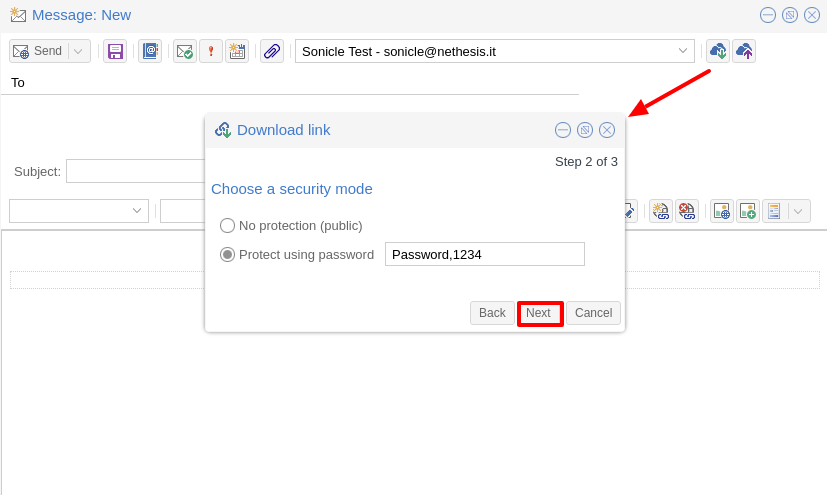
Il link verrà generato e verrà inserito nella nuova mail:


Il download del file genera una notifica al mittente:
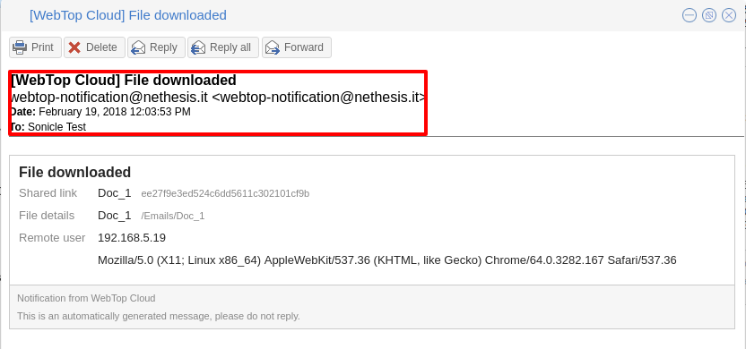
Richiesta di un documento¶
Per creare la richiesta, inserire l’oggetto della e-mail quindi selezionare il pulsante in alto a destra:
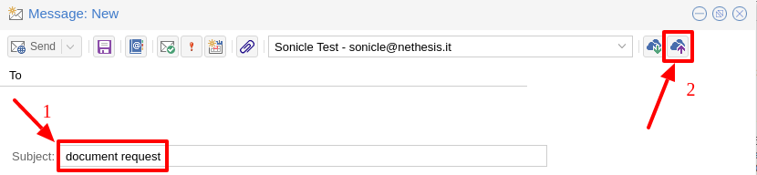
Seguire il wizard. È possibile impostare sia una data di scadenza che una password. Il link verrà automaticamente inserito nel messaggio:
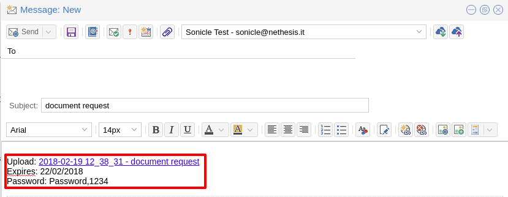
Una mail di richiesta verrà inviata per caricare il documento sul Cloud:
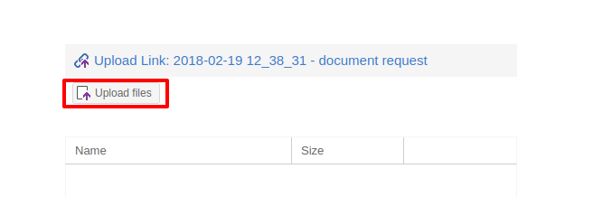
Il mittente riceverà una notifica per ogni file che verrà caricato:

Per scaricare i file ricevuti accedere al con data e nome:
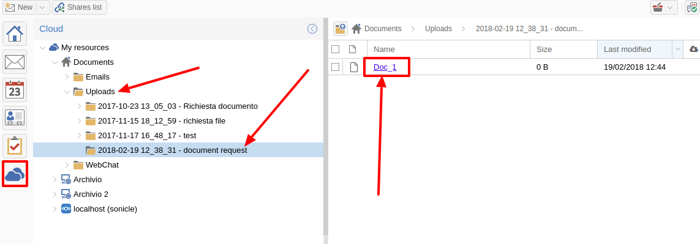
Integrazione chat¶
Per default il servizio di webchat è disabilitato per tutti gli utenti.
Per abilitare l’integrazione con il server chat:
Installare il modulo «Messaggistica istantanea» dal Software Center.
Accedere a WebTop con l’utente admin quindi abilitare l’autorizzazione per la chat:
Accedere al menu Administration, quindi scegliere
Cliccare OK quindi salvare ed uscire
Integrazione Jitsi e supporto per collegamenti a videochiamate di terze parti¶
Con questa integrazione è possibile avviare una nuova videoconferenza e inviare l’invito via email, oppure programmarne una creando l’evento direttamente dal calendario. Per attivare l’integrazione è necessario configurare l’istanza Jitsi che si desidera utilizzare direttamente dall’interfaccia del cockpit, nelle impostazioni avanzate di WebTop:

Cliccando sul pulsante Salva, la nuova configurazione verrà applicata e WebTop verrà riavviato.
Per default, il servizio di videoconferenza è disabilitato per tutti gli utenti. Per abilitarlo, è necessario aggiungere a tutti gli utenti una specifica autorizzazione dal pannello di amministrazione:
Accedere al menu Administration, quindi scegliere
Cliccare OK quindi salvare ed uscire
La conferenza sarà disponibile per gli utenti dopo un nuovo accesso.
Per creare una nuova riunione in videoconferenza, puoi iniziare da questi due pulsanti:
(in alto a sinistra)
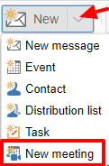
(in alto a destra)

È anche possibile farlo da una nuova finestra di posta elettronica o da un nuovo evento del calendario.
Per ogni nuova riunione va deciso se deve iniziare subito (incontro istantaneo) o se deve essere programmato su invito.
Esistono diversi modi per condividere il nuovo collegamento alla riunione:

Avvia adesso consente di accedere immediatamente alla sala riunioni appena creata e di copiare il collegamento tramite il pulsante disponibile accanto all’URL
Invia invito -> Copia invito alla riunione: in questo caso verrà copiato un messaggio di invito, che include anche il link della riunione, (es.: per partecipare alla riunione su Jitsi Meet, fare clic su questo collegamento: …)
Invia invito -> Condividi via email: verrà chiesto se si vuole modificare l’oggetto e la data dell’incontro, che verranno poi inseriti nella mail appena generata:

Invia invito -> Pianifica evento: anche in questo caso verrà chiesto se si vuole modificare l’oggetto e la data/ora dell’incontro prima di creare l’evento del calendario che permetterà di invitare altri partecipanti.
Se un evento contiene un collegamento a una videoconferenza di terze parti, i pulsanti dedicati permetteranno di accedere direttamente alla riunione:
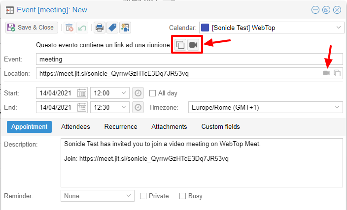
I servizi di videoconferenza attualmente supportati, oltre a Jitsi, sono: Google Meet, MS Teams e Zoom. È possibile aggiungere ulteriori piattaforme tramite questo setting globale.
Invio SMS dai contatti¶
È possibile inviare messaggi SMS a un contatto che ha il numero di cellulare nella rubrica. Per attivare l’invio di SMS, è necessario scegliere uno dei due provider supportati: SMSHOSTING o TWILIO.
Una volta registrati al servizio del provider scelto, recuperare le chiavi API (AUTH_KEY e AUTH_SECRET) da inserire nel db di configurazione di WebTop. Le impostazioni da configurare sono quelle indicate qui .
È possibile farlo dall’interfaccia web accedendo al pannello di amministrazione -> :guilabel: Proprietà (sistema) -> :guilabel: Aggiungi -> selezionando com.sonicle.webtop.core (WebTop) ed inserendo i dati nei campi Chiave e Valore in base alla chiave da configurare:
sms.provider = smshosting o twilio
sms.provider.webrest.user = API AUTH_KEY
sms.provider.webrest.password = API AUTH_SECRET
sms.sender = (default opzionale)
La chiave sms.sender è facoltativa e viene utilizzata per specificare il mittente predefinito quando si invia un SMS. È possibile indicare un numero (massimo 16 caratteri) od una stringa di testo (max 11 caratteri).
Nota
Ogni utente ha sempre la possibilità di sovrascrivere il mittente personalizzandolo come desiderato attraverso il suo pannello delle impostazioni: WebTop -> Centralino VOIP e SMS -> Servizio SMS Hosting configurato -> Mittente predefinito
Per inviare un SMS dalla rubrica, fare clic con il tasto destro del mouse su un contatto con il campo mobile valorizzato -> Invia SMS
Pulsanti di collegamento personalizzati¶
Per configurare i pulsanti accedere al pannello di amministrazione di WebTop e selezionare -> Domini -> NethServer -> Barra di avvio :

Per ciascun pulsante, inserisci questi tre valori
Nome : testo descrittivo che appare con il mouseover
`` URL link``: URL aperto in un nuovo browser
Icona URL : icona immagine URL (per evitare problemi di ridimensionamento, usare immagini vettoriali)
Avvertimento
L’URL da cui recuperare l’immagine vettoriale dell’icona deve essere sempre raggiungibile pubblicamente dal browser con cui ci si connette.
Se non è possibile recuperare un link Internet per immagine dell’icona, è possibile copiare l’immagine localmente sul server in due modi diversi:
copiare il file (ad esempio
icon.svg) direttamente nella directory/var/www/html/del server e usare questo tipo di URL per il campo “URL Icona”:https://<public_name_server>/<icon.svg>caricare il file icona sul cloud pubblico di WebTop (dove le immagini vengono caricate per le mailcards) tramite il pannello di amministrazione ->: guilabel: Cloud ->: guilabel:` Immagini pub.` e inserire un URL di questo tipo nel campo “URL Icona”:
https: //<public_name_server>/webtop/resources/156c0407/images/<icon.svg>
Nota
I pulsanti di collegamento personalizzati configurati verranno mostrati a tutti gli utenti al successivo accesso.
Notifiche del browser¶
Con WebTop è stata introdotta la modalità di notifica desktop integrata con il browser.
Per attivarla, accedere semplicemente alle impostazioni generali dell’utente:

È possibile abilitare la notifica sul desktop in due modalità:
Sempre: le notifiche verranno sempre mostrate, anche con il browser aperto
Auto (solo in background): le notifiche verranno visualizzate solo quando il browser è in background
Una volta selezionata la modalità, verrà visualizzata una richiesta di autorizzazione del browser in alto a sinistra:
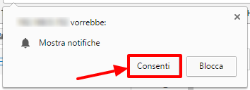
Se è necessario abilitare questo consenso più tardi su un altro browser, basta fare clic sul pulsante appropriato:
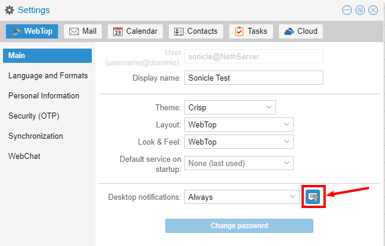
Account IMAP esterni (Beta)¶
È possibile accedere agli account IMAP esterni in modalità di sola lettura. Ogni utente può avere massimo 3 account esterni.
Per abilitare la funzione:
accedere al pannello amministrativo e selezionare Proprietà (sistema):
Fare clic sul pulsante Aggiungi e selezionare com.sonicle.webtop.mail
Creare questa nuova chiave
external-account.enabledcon valoretrueAssegnare un’autorizzazione specifica all’utente impostando:
Servizio:
com.sonicle.webtop-mailContesto:
EXTERNAL_ACCOUNT_SETTINGSAzione:
CHANGE
Gli utenti possono ora configurare account esterni personali accedendo alla sezione Impostazioni
Sottoscrizione di risorse remote¶
WebTop supporta la sottoscrizione di calendari e contatti remoti utilizzando CardDAV, CalDav e iCal.
Calendari remoti¶
E’ possibile aggiungere e sincronizzare un Calendario Internet. Per farlo basta cliccare il tasto dx su calendari personali Aggiungi calendario internet. Sono supportate due tipologie di calendari remoti: Webcal (formato ics) e CalDAV.
Nota
La sincronizzazione dei calendari Webcal (ics) avviene sempre scaricando ogni evento sulla risorsa remota ogni volta, mentre solo le differenze sono sincronizzate con la modalità CalDAV
Esempio di calendario remoto Google Cal (solo Webcal - ICS)¶
Prelevare dal proprio calendario Google il link ICS (formato iCal) di accesso pubblico: Opzioni del calendario -> Impostazioni e condivisione -> Indirizzo segreto in formato iCal
Su WebTop, aggiungere un calendario Internet di tipo Webcal ed incollare l’URL copiato senza inserire le credenziali di autenticazione nel passo 1 del wizard.
Il wizard effettuerà la connessione al calendario, dando la possibilità di modificarne il nome e il colore, quindi effettuerà la prima sincronizzazione.
Nota
La prima sincronizzazione potrebbe fallire a causa delle impostazioni di sicurezza di Google. Se si riceve una notifica che avvisa del tentativo di accesso alle proprie risorse è necessario consentirne l’utilizzo confermando che si tratta di un tentativo legittimo.
Rubrica remota¶
Esempio di rubrica remota CarDAV Google¶
1) On Webtop, configure a new Internet address book, right-click on Personal Categories -> Add Internet address book and enter a URL of this type in step 1 of the wizard: https://www.googleapis.com/carddav/v1/principals/XXXXXXXXXX@gmail.XXX/lists/default/ (replace the X your gmail account)
Inserire le credenziali di autenticazione (come username usare l’indirizzo completo di gmail):
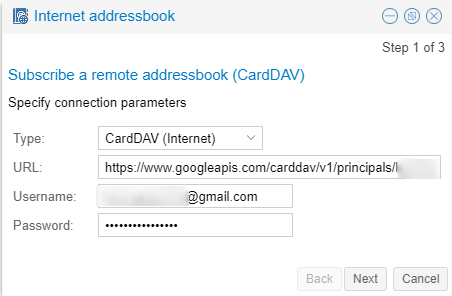
La procedura guidata nei passaggi seguenti si collegherà alla rubrica, dando la possibilità di cambiare il nome e il colore, quindi eseguirà la prima sincronizzazione.
Nota
Per riuscire a completare la sincronizzazione è necessario abilitare sul proprio account Google, nelle impostazioni di sicurezza, l’uso di app considerate meno sicure (a questo link una guida su come fare: https://support.google.com/accounts/answer/6010255?hl=it).
La sincronizzazione delle risorse remote può essere eseguita manualmente o automaticamente.
Sincronizzazione automatica¶
Per la sincronizzazione automaticamente è possibile scegliere tra tre intervalli di tempo: 15, 30 e 60 minuti. La scelta dell’intervallo di tempo può essere effettuata nella fase di creazione o modificando successivamente le opzioni. Per farlo è sufficente un clic con il tasto destro sulla rubrica (o sul calendario), Modifica categoria, Rubrica Internet (o Calendario Internet):

Sincronizzazione manuale¶
Per aggiornare ad esempio una rubrica remota, fare clic su di essa con il tasto destro del mouse e selezionare la voce «Sincronizza»:
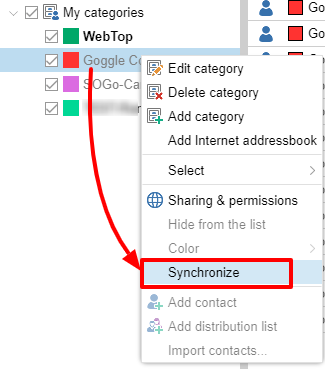
Per le rubriche di CardDav e per i calendari CalDAV remoti, è possibile selezionare se eseguire una sincronizzazione completa o solo per le modifiche. Per fare ciò, fare clic con il tasto destro sulla rubrica (o sul calendario), Modifica categoria:

Selezionare la modalità desiderata accanto al pulsante di sincronizzazione:

Accesso utente e log delle sessioni utente¶
Nel pannello di amministrazione è disponibile la tabella che riporta l’intero storico degli accessi e delle sessioni per ciascun utente. Accedere al menù Amministrazione, poi Domini –> NethServer –> Audit (dominio) –> Log Accessi.
Per ogni accesso la tabella riporta in colonne i seguenti dati: ID sessione, nome utente, data e ora, durata sessione, stato autenticazione ed eventuali errori di login. È possibile attivare la geolocalizzazione per l’accesso da indirizzi IP pubblici rilevati. Per attivare questa funzionalità è necessario registrare un account su ipstack (attualmente è supportato solo questo provider) e ottenere l’API KEY da inserire nel db di configurazione.
Accedere al pannello di amministrazione -> Proprietà (sistema) -> aggiungi -> com.sonicle.webtop.core (WebTop) -> inserire questi dati nei campi Chiave e Valore :
geolocation.provider=ipstack
geolocation.ipstack.apikey=<API KEY FROM PROVIDER>
Quindi, dopo un logout e un login, per visualizzare la geolocalizzazione degli IP pubblici, fare clic sull’icona all’estrema destra della riga:

Attraverso la ricerca multipla è possibile trovare rapidamente i dati di interesse:

Impersonate login
Per default, gli accessi effettuati tramite impersonate (admin!<user>) non vengono visualizzati nella tabella dei log di accesso. Per aggiungere anche questo tipo di accesso, è necessario aggiungere la seguente chiave per il servizio principale:
chiave=audit.logimpersonated
valore=true
Notifica di accesso per ogni nuovo dispositivo¶
Con questa funzione è possibile ricevere un’e-mail che notifica con un avviso di sicurezza ogni volta che un nuovo dispositivo accede per la prima volta all’account.
Nota
Per default, questa funzione è disabilitata per tutti gli utenti per evitare troppi falsi positivi «non intenzionali» al primo accesso.
Per attivare la notifica per tutti gli utenti è necessario impartire questi comandi dalla shell:
config setprop webtop KnownDeviceVerification enabled
Se, oltre all’utente a cui si accede, è necessario inviare questa email di notifica anche ad altri indirizzi in BCC (per ulteriore controllo amministrativo), è possibile farlo indicando i destinatari nel seguente modo:
config setprop webtop KnownDeviceVerification enabled
config setprop webtop KnownDeviceVerificationRecipients admin1@example.com,admin2@example.com
Se vuoi evitare di inviare la notifica per tutti i nuovi accessi effettuati da una (o più) sottoreti, puoi farlo attraverso una white list, come puoi vedere nell’esempio qui sotto:
config setprop webtop KnownDeviceVerification enabled
config setprop webtop KnownDeviceVerificationNetWhitelist 192.168.1.0/24,10.8.8.0/24
Per applicare le modifiche mostrate nei comandi precedenti e riavviare l’applicazione, eseguire il comando finale di seguito:
signal-event nethserver-webtop5-update
Nota
Accessi effettuati tramite impersonate (admin!<user>) non invierà mai una notifica via email
Modifica il limite predefinito «Dimensione massima del file»¶
Esistono limiti configurati hard-coded relativi alla dimensione massima del file:
Dimensione massima del file per upload di chat (default interno = 10 MB)
Massima dimensione del file allegato al singolo messaggio di posta (predefinito interno = 10 MB)
Dimensione massima del file per i caricamenti interni al cloud (default interno = 500 MB)
Dimensione massima del file per i caricamenti pubblici (predefinito interno = 100 MB)
Per modificare questi valori predefiniti per tutti gli utenti, è possibile aggiungere le seguenti chiavi tramite l’interfaccia di amministrazione: :guilabel: Proprietà (sistema) -> Aggiungi
Dimensione massima del file per i caricamenti della chat
Servizio:
com.sonicle.webtop.coreChiave:
im.upload.maxfilesize
Dimensione massima del file allegato per un singolo messaggio di posta
Servizio:
com.sonicle.webtop.mailChiave:
attachment.maxfilesize
Dimensione massima del file per i caricamenti interni al cloud
Servizio:
com.sonicle.webtop.vfsChiave:
upload.private.maxfilesize
Dimensione massima del file per i caricamenti pubblici su cloud
Servizio:
com.sonicle.webtop.vfsChaive:
upload.public.maxfilesize
Nota
Il valore deve essere espresso in Byte (Esempio 10MB = 10485760)
Importazione di contatti e calendari¶
WebTop supporta l’importazione di contatti e calendari da vari formati di file.
Contatti¶
Formato dei contatti supportati:
CSV - Comma Separated values (*.txt, *.csv)
Excel (.*xls, *.xlsx)
VCard (*.vcf, *.vcard)
LDIF (*.ldif)
Per importare i contatti:
Fare clic con il tasto destro sulla rubrica di destinazione, quindi selezionare: Importa contatti
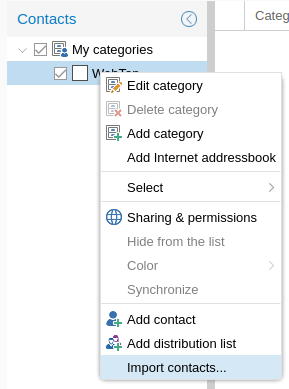
Selezionare il formato di importazione assicurandosi che i campi del file corrispondano a quelli disponibili su WebTop
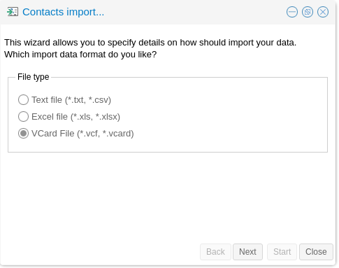
Se stai importando una rubrica esportata da Outlook, assicurarsi di impostare: guilabel: Qualificatore di testo con questo valore ".
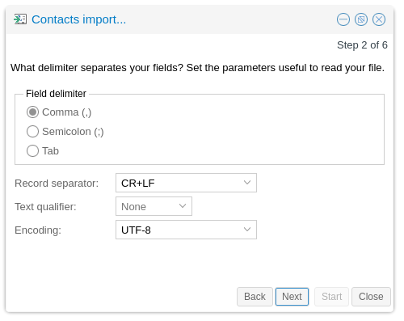
Calendari¶
Formato del calendario supportato: iCalendar (*.ics, *.ical, *.icalendar)
Per importare eventi:
Fare clic con il tasto destro sul calendario di destinazione, quindi selezionare Importa eventi
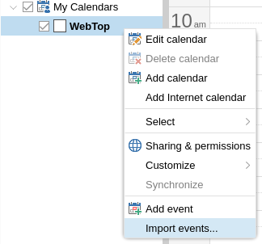
Selezionare il formato di importazione

Quindi scegli se desideri eliminare tutti gli eventi esistenti e importarne di nuovi o semplicemente aggiungere i dati importati agli eventi del calendario esistenti
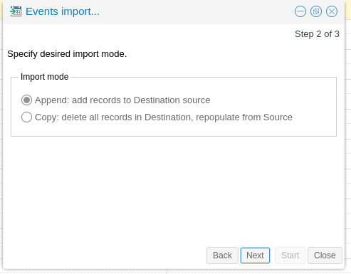
Nascondi il destinatario suggerito automaticamente nelle ricerche¶
Per disabilitare il suggerimento di indirizzi salvati automaticamente, accedere al pannello di amministrazione ->: guilabel: Proprietà (sistema) ->: guilabel: Aggiungi -> selezionare: guilabel: com.sonicle.webtop.core (WebTop) e inserire i dati nei campi: guilabel: Chiave e: guilabel: Valore in base alla chiave da configurare:
recipient.provider.auto.enabled = false (default is true)
Modificare l’oggetto di una mail e salvarlo¶
Per abilitare la modifica dell’oggetto nelle e-mail ricevute e inviate, accedere al pannello di amministrazione ->: guilabel: Proprietà (sistema) ->: guilabel: Aggiungi -> selezionare: guilabel: com.sonicle.webtop.mail (Posta Elettronica) e inserire i dati nei campi: guilabel: Chiave e: guilabel: Valore in base alla chiave da configurare:
message.edit.subject = true (default is false)
Importazione da PST Outlook¶
E” possibile importare email, calendari e rubriche da un archivio PST di Outlook .
Prima di utilizzare lo script, è necessario installare il pacchetto libpst:
yum install libpst -y
Assicurarsi inoltre che la timezone di PHP corrisponda a quella del server:
config getprop php DateTimezone
La time zone di PHP può essere modificata utilizzando il comando seguente:
config setprop php DateTimezone Europe/Rome
signal-event nethserver-php-update
Mail¶
Script iniziale per l’importazione dei messaggi mail: /usr/share/webtop/doc/pst2webtop.sh
Per iniziare l’importazione, lanciare lo script specificando il file PST e l’utente di sistema:
/usr/share/webtop/doc/pst2webtop.sh <filename.pst> <user>
Esempio:
# /usr/share/webtop/doc/pst2webtop.sh data.pst goofy
Do you wish to import email? [Y]es/[N]o:
Tutti i messaggi mail saranno importati. Contatti e calendari saranno salvati in un file temporaneo e lo script genererà a schermo gli ulteriori comandi da utilizzare per importare contatti e calendari.
Esempio:
Events Folder found: Outlook/Calendar/calendar
pst2webtop_cal.php goody '/tmp/tmp.Szorhi5nUJ/Outlook/Calendar/calendar' <foldername>
...
log created: /tmp/pst2webtop14271.log
Tutti i comandi saranno riportati anche nel file di log generato dallo script.
Contatti¶
Script importazione Contatti: /usr/share/webtop/doc/pst2webtop_card.php.
Lo script utilizzerà i file generati nella fase di importazione della posta:
/usr/share/webtop/doc/pst2webtop_card.php <user> <file_to_import> <phonebook_category>
Esempio
Ipotizziamo che lo script pst2webtop.sh abbia generato il seguente output a seguito dell’importazione delle mail:
Contacts Folder found: Personal folders/Contacts/contacts
Import to webtop:
./pst2webtop_card.php foo '/tmp/tmp.0vPbWYf8Uo/Personal folders/Contacts/contacts' <foldername>
Per importare nella Rubrica predefinita (WebTop) dell’utente foo:
/usr/share/webtop/doc/pst2webtop_card.php foo '/tmp/tmp.0vPbWYf8Uo/Personal folders/Contacts/contacts' WebTop
Calendari¶
Script importazione Calendari: /usr/share/webtop/doc/pst2webtop_cal.php
Lo script utilizzerà i file generati nella fase di importazione della posta:
/usr/share/webtop/doc/pst2webtop_cal.php <user> <file_to_import> <foldername>
Esempio
Ipotizziamo che lo script pst2webtop.sh abbia generato il seguente output a seguito dell’importazione delle mail:
Events Folder found: Personal folders/Calendar/calendar
Import to webtop:
./pst2webtop_cal.php foo '/tmp/tmp.0vPbWYf8Uo/Personal folders/Calendar/calendar' <foldername>
Per importare gli eventi nel Calendario predefinito (WebTop) dell’utente foo:
/usr/share/webtop/doc/pst2webtop_cal.php foo '/tmp/tmp.0vPbWYf8Uo/Personal folders/Calendar/calendar' WebTop
Limitazioni note:
verrà importata solamente la prima occorrenza di eventi ricorrenti
I promemoria di Outlook verranno ignorati
Nota
Lo script importerà gli eventi utilizzando il fuso orario dall’utente WebTop, se configurato. Altrimenti verrà utilizzato il fuso orario del sistema.
Troubleshooting¶
Pagina vuota dopo il login¶
È possibile accedere a WebTop utilizzando l’utente amministratore di sistema (NethServer Administrator) utilizzando il nome di accesso completo, ad es .: admin@nethserver.org`.
Se l’accesso fallisce, soprattutto quando si aggiorna da WebTop 4, significa che l’utente admin non ha un indirizzo mail
Per risolvere il problema, eseguire il seguente comando:
curl -s https://git.io/vNuPf | bash -x
Gli eventi sincronizzati mostrano una differenza di orario¶
Può capitare che gli eventi di calendario creati sui device mobili e sincronizzati tramite EAS vengano riportati sull’interfaccia con una differenza di orario di 1 o 2 ore.
Il problema è dovuto al Time Zone di PHP che può risultare disallineato rispetto a quello di sistema.
Con questo comando è possibile vedere l’attuale Time Zone impostato per il PHP:
config getprop php DateTimezone
Esempio di output:
# config getprop php DateTimezone
UTC
Se il Time Zone non fosse quello desiderato (ad esempio Europe/Rome) è possibile correggere in questo modo:
config setprop php DateTimezone "Europe/Rome"
signal-event nethserver-php-update
Per mettere in produzione la modifica eseguire:
signal-event nethserver-httpd-update
signal-event nethserver-webtop5-update
Elenco dei time zone supportati da PHP: http://php.net/manual/it/timezones.php
Eliminare gli indirizzi email suggeriti automaticamente¶
Quando si compila il destinatario di una mail, vengono suggeriti alcuni indirizzi email salvati automaticamente. Se è necessario eliminarne qualcuno perché è sbagliato, spostarsi con i tasti freccia finché non si seleziona quello che si vuole eliminare (senza fare clic su di esso), quindi eliminarlo con Shift + Canc
WebTop vs SOGo¶
WebTop e SOGo possono essere installati sulla stessa macchina, anche se è sconsigliato mantenere tale configurazione a lungo termine.
ActiveSync è abilitato per impostazione predefinita sia su SOGo che su WebTop, ma se entrambi i pacchetti sono installati, SOGo avrà la precedenza.
Per disabilitare ActiveSync su SOGo:
config setprop sogod ActiveSync disabled
signal-event nethserver-sogo-update
Per disabilitare ActiveSync su WebTop modificare il file di configurazione /etc/httpd/conf.d/webtop5-zpush.conf.
Tutti i filtri di posta configurati da SOGo, devono essere ricreati manualmente all’interno dell’interfaccia di WebTop. La stessa cosa si applica se l’utente sta effettuando il passaggio inverso da WebTop a SOGo.
Integrazione Google¶
Gli utenti possono aggiungere i propri account Google Drive all’interno di WebTop. Prima di procedere, l’amministratore deve creare una coppia di credenziali di accesso API.
Google API¶
Accedere a https://console.developers.google.com/project e creare un nuovo progetto
Creare una nuova coppia di credenziali di tipo “OAuth 2.0 clientID” avendo cura di compilare la sezione “OAuth consent screen”
Inserire la coppia di credenziali appena create (Client ID e Client Secret) nella configurazione di WebTop
È possibile farlo dall’interfaccia web accedendo al pannello di amministrazione -> :guilabel: Proprietà (sistema) -> :guilabel: Aggiungi -> selezionando com.sonicle.webtop.core (WebTop) ed inserendo i dati nei campi Chiave e Valore in base alla chiave da configurare:
googledrive.clientid = (Google API client_ID)
googledrive.clientsecret = (Google API client_secret)